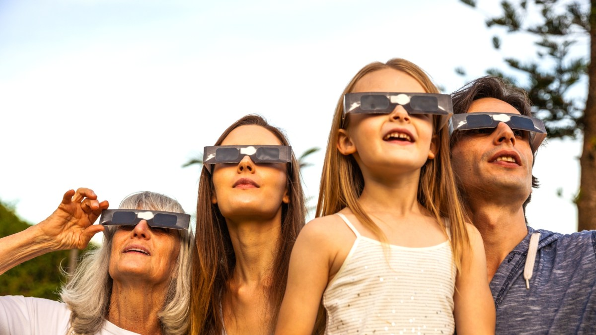

Comment regarder l’éclipse solaire du 12 août avec des enfants ?

L'actualité tech ne cesse d'évoluer. Nouveaux produits, acquisitions, découvertes : chaque jour apporte son lot d'informations importantes pour comprendre le monde numérique de demain.
Ce qu'il faut retenir
Une éclipse de Soleil est un événement rare, fascinant, mais aussi dangereux pour les yeux.
C'est pourquoi la vigilance est d'autant plus grande lorsque des enfants sont impliqués.
Voici quelques conseils pour profiter au mieux du phénomène avec les plus petits.
Pourquoi c'est important
Cette information pourrait avoir des répercussions sur tout le secteur technologique. Elle concerne directement les utilisateurs de technologies numériques et mérite d'être suivie de près dans les prochaines semaines. Comment regarder l’éclipse solaire du 12 août avec des enfants ? est ainsi un signal à prendre en compte pour comprendre les évolutions du secteur.
En résumé
Retenez l'essentiel : Comment regarder l’éclipse solaire du 12 août avec des enfants ?. Cette actualité a été rapportée par Numerama. Nous continuerons de suivre ce sujet et de vous tenir informés des prochaines évolutions.
🛒 En lien avec cet article
Liens de partenariat Amazon : une commission peut être reversée, sans surcoût pour vous.
Source : Numerama